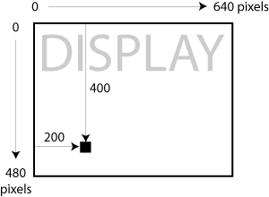
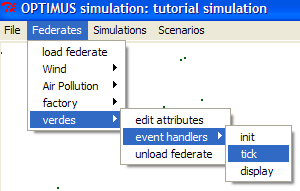

OPTIMUS TUTORIAL 1 Open Teaching Platform for Teaching Integrated Modeling and Urban Simulation |
||||||||
|
Welcome to the first OPTIMUS tutorial. This tutorial (the first in a set) will walk you through the process of experimenting with OPTIMUS using a set of example files that you can modify. WHAT IS OPTIMUS?OPTIMUS is a simulation authoring environment developed in Python designed to give students with novice programming skills the chance to simulate spatial data problems relating to urban problems and the environment. ASSUMPTIONSThe tutorial assumes you have already read about the OPTIMUS architecture (if not try here). It also assumes you already know a bit about the programming language Python (if not, try here). For now, OPTIMUS works on Windows and UNIX based machines only. ASSIGNMENTFor this first tutorial, we’re going to look at and alter a simulation involving pollution-creating factories, where wind affects the pollution movement, and where there are agents known as verdes who do everything they can to move away from highly polluted areas to less polluted areas. Your job is to learn the basics of how OPTIMUS works through making simple code alterations to various elements of the simulation to achieve a variety of different states. GET THE FILES YOU NEEDIf necessary, visit the OPTIMUS website if you haven't done so already: http://ccnmtl.columbia.edu/projects/optimus/ and follow the instructions to download and install Python and OPTIMUS. RUN OPTIMUSTry running OPTIMUS by clicking on the Optimus.py file. It's located in a folder called 'optimus prototype'. Go to the Simulations menu and select Load Simulation. Then navigate to the 'tutorial_completed' directory (folder) and select the file simulation.xml.
Hit the Start button and see what you’ve got. You should see stationary factories emitting blobs of pollution and little green rectangles making a run for ‘cleaner’areas of the display.
If the simulation appears to be working properly, proceed to the next section below. If for some reason the simulation does not run, chances are something went wrong with the installation: (The most common mistake in the installation is that students forget to copy the csv.pyd file to the right directory (Step 6 in the instructions). We recommend returning to the installation instructions and checking to make sure you followed all the steps.) CHANGING THE WIND FEDERATEBased on the origin of the pollution you can see where the factories are located and you can probably guess the wind’s default vectors. Stop the simulation for a moment. Try the menu up top and edit the wind direction and check the result:
Later we'll see how to adjust the starting conditions in the code. EXPLORE THE FILE STRUCTUREFind your way to your OPTIMUS directory (or folder). Open it up. Open the Simulations folder. In it you will see a directory called ‘tutorial_completed’. Open this directory. YOUR FIRST FEDERATE: FACTORY(what's a federate? see the architecture document) We’re going to start by looking at the Factory federate that will emit pollution following some pollution rules. Open the factory directory and open the file called federate.xml using a text editor (Wordpad works pretty nicely on WIndows). All federates in OPTIMUS begin with this heading where name and system are the name of the directory you created for the federate:
The next section of a federate is its attributes. For factories, all we need to specify is where they are located. They are fixed in place, but rather than code the locations into the federate, we will have OPTIMUS refer to an external CVS file (CSV stands for Comma Separated Values) for the locations. Here is how it should look, where factories.csv is the external data file:
Then if you look in the same directory where the federate.xml file is located, you will see another file called factories.csv which contains the x,y coordinates of each factory you want to include as well as how many units of pollution they will emit. The origin of the display is in the upper left so a x,y of 200, 400 would appear here: 
Our completed CSV file looks like this, but you can change these to whatever numbers you like keeping in mind that the display size is 640 x 480.
Now it’s time to return to our federate.xml file to check out the event handlers. We need two events to occur, the init.py and something called the tick.py. OPTIMUS is designed to run init.py files when federates are initially (get it? init – initially, ok) loaded in order to load in all the starting conditions for a given simulation. OPTIMUS also is preset to run tick.py files each time a time step passes (tick tick tick...asleep yet?) in order to update the simulation. So, in other words, init is where you go to make changes to starting conditions and tick is where you go to change what happens on each time step. Handlers look like this and follow the attributes in the federate.xml file:
Then while we’re here, we finish off the file with a federate endtag:
So the complete federate.xml file for the factory federate should look like this:
Now let’s look at the init.py file which tells OPTIMUS what to do with the factory information that we have in our CSV file. PY files can also be opened with a text editor or with Python's GUI known as IDLE (Integrated DeveLopment Environment for those of you who must know). OR you can go back to the simulation and go to the Federates menu and load any event handler from any federate. Below is shown how to load the factory's init.py file.
The first line of the init.py file loads the CSV data for the factory and telling OPTIMUS it should expect 2 integers for the x and y location of each factory and then a float (aka decimal number) for the emission units per unit time for each factory. The next 3 lines of the init file assign the csv data to 3 arrays (x,y, and emission) that will be picked up by the tick file for passing to the pollution federate for each time step.
Close the init.py file and open the tick.py file which looks like this (again you can load from the federate menu or find the file in the 'tutorial_completed' directory inside the factory directory:
For each timestep, OPTIMUS performs an event called “emit pollution” at each factory’s x,y point using the two arrays (x and y) from the init.py file with the pollution units stored in the emission array from the init.py file. The pollution federate we made picks this information up and uses it to calculate the pollution levels and dispersal taking wind into account (we’ll get to that in a minute). Did you try changing the number of factories or their placement yet? If not, now is a good time. Be sure to run Optimus.py to make sure your changes work and take note of the result the simulation run. Can you place factories to get a more or less predictable result? CHANGE WIND FEDERATE STARTING DIRECTIONBased on what you now know, take a look at the Wind federate files and see if you can change the starting values for the wind vectors. (need a hint? find the federate.xml file in the Wind directory and look at the attributes.) MAKING SPATIALLY AWARE AGENT FEDERATES: VERDESTo make things a little more exciting now we’re going to look at a federate that will examine the pollution being emitted and try to move away from it every timestep. The most important piece in the verdes federate is the tick.py file as we are using some techniques in that handler that will allow each verde to “look” around and decide how to move away from any pollution that might be near it at every time step. Open tick.py for the verdes. Again, either find the directory called ‘verdes’ in the Tutorial directory and open the tick file or load it from the Federate menu using the event handler function.  First we have some lines that will be covered when we get to the verdes display file (to make sure the array of the number of verdes matches what the user may have changed it to):
This will change the length of the arrays as needed and then in the display file the number of drawn dots will get adjusted if necessary. This next piece each verde’s sight ability. This first section will give us blank arrays for the point where each verde is currently located (c) as well as one coordinate to its north (n), south (s), east (e) and west (w).
Now we have to pull in the data that each verde is ‘looking’ for - the pollution emission from the pollution federate. Since the pollution dispersion is actually ¼ the size of the display we have to scale it up, convert it into integers and then load all the numbers into our arrays from above:
Now comes the fun part, where each verde is going to go through the following steps to determine which direction to move. Each verde will have to compare all 4 directions and its current spot:
Then we add the result of the comparison to each verde’s current location:
Then we add a caveat where if a verde is within one pixel of the edge of the display it will stay in the same place (so the ‘looking’ function does not fail on the next tick and so verdes don’t move off the display):
This is the end of the tick.py file. Now, instead of specifying where the verdes will start with a CSV as with the factories, we’re going to generate their locations randomly. First we need to decide how many there will be and list that as an attribute within our attribute tags within the federate file. Again, you can open this with Wordpad. It's in the folder called 'verdes' within the 'simulation_completed' folder.
As you can see, we’re starting with 50 verdes as a default but allowing anywhere from 0-1000. You can experiment with these numbers. To generate the random locations, we’re going to use the init.py file, so we’ll need the following in as a handler (just as in the factory federate):
To generate the random locations in the init.py file we’re going to use a Python library called MLab. This will generate 2 arrays of random numbers with as many numbers as we specified in our attribute above (in our case 50), one for the x coordinate and one for the y. Since the generated numbers are all between 0 and 1 we will (cleverly) multiple them all by the dimensions of our display to allow the equal possibility of verdes appearing anywhere on the display. Open the init.py file for the verdes (either through the Federates menu using edit event handler or find the file in the 'verdes' folder).
(hey can you go back to the wind federate and make the wind vectors random?) Now what is going to be displayed? Unlike our factories, where we could infer the location of the factories based on the pollution being emitted, we need to have OPTIMUS create a display element for each verde so we can watch them move since we have no reference points based on them emitting anything. To do this we’re going to add a second piece to the init.py file that will plot each verde’s location using a dot:
So for every verde we’re going to use the canvas to create a rectangle around the location of each x,y one pixel in each direction and color it with the hex #006600 (aka green – hey! green – verde – get it?) You can change the color if you like or the size of the verdes. Now if you looked at the verdes' federate.xml file, you'll see an additional handler called the display.py. Let's check it out. First it checks to be sure the number of verdes has not been changed by the user and if it has, we need to decrease the arrays and delete the excess dots:
(Remember, the tick.py file also checks the above to check the array length at every time step.) The rest of the display.py file is a repeat of what we have in the init file to draw the tiny green rectangles (if you changed the size in the init.py file, you'll have to do it here too!):
RUN OPTIMUSNow that we've seen a few federates, let's try running Optimus.py again. Start the simulation and see what you’ve got... Stop the simulation. Go to the menu and edit the number of verdes and run it again. Notice how you can increase them up to 1000 as we specified in the federate attribute. See if you can go back to the verdes federate.xml file and try making this maximum number MUCH larger and see what happens.
|